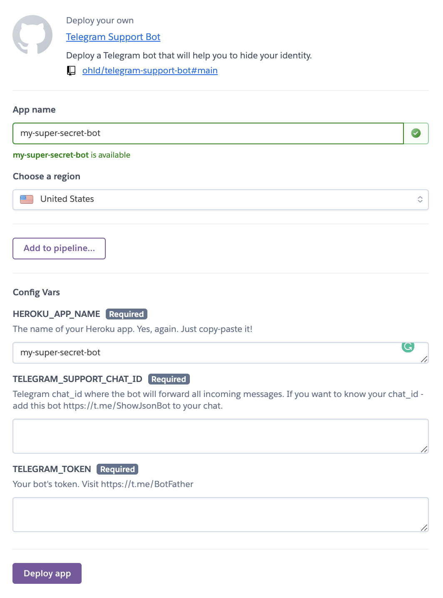

Представьте, что у вас есть свой канал в Телеге. Допустим, вы высказываете непопулярную политическую точку зрения и, соответственно, ловите хейт в личку со стороны читателей и проходящих мимо.
Или, например, вы продаете что-то через свой канал. Клиентов так много, что один "продажник" (=вы) не справляется. Или поддержка вашего бизнеса отвечает всем в публичном чате, который прикреплен к вашему каналу. Но многие стесняются задать вопросы, так как их могут увидеть, поэтому пишут в личку, что не масштабируется.
Проблем много, а решение одно: сделать Телеграм бот, который будет работать посредником между вашими клиентами и командой поддержки.
Мое мнение: это самый лучшее применение телеграм ботов за всю историю их существования. На втором месте - рассылка закрытой информации через бота только проплатившим пользователям.
Самый популярный конструктор таких ботов - Livegrambot. Он позволяет сделать тоже самое, но при этом бот будет писать вашим пользователям "я сделан через Livegrambot", выпрашивая деньги у вас. Будучи умелым создателем Телеграм ботов, я решил сделать свой аналог, но уже с открытым исходным кодом и легким способом запустить его бесплатно на бесплатные серверы.
TL;DR: Код выложил сюда: https://github.com/ohld/telegram-support-bot
Действующие лица:
Такая схема неплохо масштабируется: достаточно нанять больше Агентов поддержки, и все Пользователи получат свои ответы вовремя и через бота.
Планируя дизраптнуть платный аналог, необходимо продумать онбординг. Большинству проще заплатить, чем самому разбираться в коде, технологии и деплое. К счастью, я фанат Heroku, а именно там можно бесплатно хостить свой код, нажав всего одну кнопку.
В README.md я добавил волшебную кнопку от Heroku, которая поможет запустить код из репозитория. После нажатия, при наличии аккаунта на Heroku (который можно создать также по 1 кнопке), вы увидите такую картину:
Heroku уже понял, какие данные нужно запросить у вас, у создателя, чтобы все завелось автоматически. Давайте пройдемся по этим параметрам:
HEROKU_APP_NAME:TELEGRAM_SUPPORT_CHAT_ID:TELEGRAM_TOKENСпособов много, но самый простой - это добавить вот этого бота в ваш созданный приватный чат. Этот бот возвращает все данные, которые ему присылает Телеграм, в частности событие "меня добавили в чат", откуда вы и сможете извлечь chat_id.
Ниже будет много технической информации. Мы же на Хабре, поэтому я решил добавить этот раздел для любителей разобраться в коде и при необходимости его адаптировать. Это раздел можно спокойно пропустить, если хотите.
Примеры кода я буду писать на языке Python и использовать библиотеку
python-telegram-bot.Итогда я буду вставлять ссылки на GitHub (гит), чтобы легко можно было найти этот кусок кода в моем репозитории.
Для нашей задумки необходимы всего 3 хендлера (гит):
from telegram.ext import Updater
from telegram.ext import CommandHandler, MessageHandler, Filters
updater = Updater(TELEGRAM_TOKEN)
dp = updater.dispatcher
# Для приветственного сообщения и для "к вам подключился {username}"
dp.add_handler(CommandHandler('start', start))
# Для пересылки из бота в чат поддержки
dp.add_handler(MessageHandler(Filters.chat_type.private, forward_to_chat))
# Для пересылки ответа из чата обратно пользователю
dp.add_handler(MessageHandler(Filters.chat(TELEGRAM_SUPPORT_CHAT_ID) & Filters.reply, forward_to_user))В случае пересылки ботом сообщения пользователя из лички в чат поддержки, тоже все просто (гит):
def forward_to_chat(update, context):
update.message.forward(chat_id=TELEGRAM_SUPPORT_CHAT_ID)В случае отправление ответа (reply) на пересланное сообщение, необходимо скопировать содержимое сообщения и отправить его от лица бота. Если аналогично сделать
.forward,то будет виден отправитель. А тут как раз недавно в Telegram Bot API добавили возможность удобно копировать содержимое сообщения (гит):
def forward_to_user(update, context):
user_id = update.message.reply_to_message.forward_from.id
context.bot.copy_message(
message_id=update.message.message_id,
chat_id=user_id,
from_chat_id=update.message.chat_id
)Чтобы захостить это все бесплатно на Heroku, бот должен быть запущен в режиме Webhook, а не Pooling. Разница их в том, что вебхук "слушает новые сообщения от Телеги", а пулинг "периодически запрашивает". Чтобы запрашивать, сервер должен работать постоянно (условно, каждую секунду запрашивать у серверов Телеграмма новые сообщения, которые кто-то написал в бот). Однако, в случае с вебхуками, сервер может просто ждать, когда серверы Телеграмма сами отправят нам новые обновления бота.
Этот факт критически важен, если мы хотим бесплатно пользоваться услугами Heroku (который по факту дает нам свои серверы в аренду). Хероку любит "усыплять" простаивающие машины, которые пробуждаются в момент нового входящего запроса. Именно новые сообщения от серверов Телеграмма и будут пробуждать наш сервер тогда, когда необходимо переслать пользовательское сообщение из лички бота в наш чат поддержки.
Для того, чтобы настроить Webhook, необходимо поднять вебсервер, который будет слушать входящие сообщения по endpoint. Сказать Телеграму: "присылай события бота мне на сервер - по этому адресу". Также нужно как-нибудь защититься от злоумышленников, которые могут отправить на наш вебсервер событие, прикинувшись сервером телеги. Также телеграм требует, чтобы все работало https.